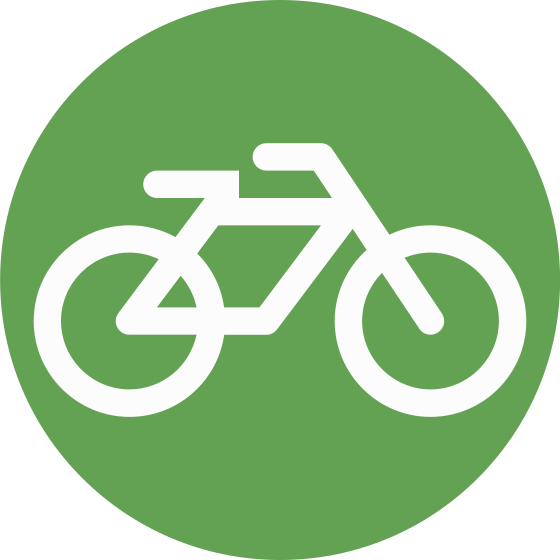
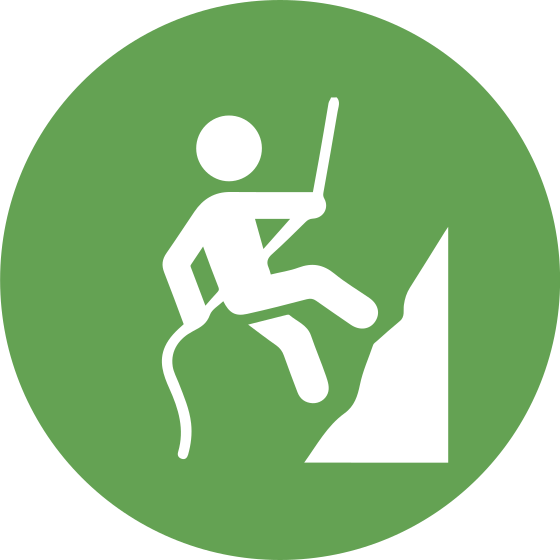
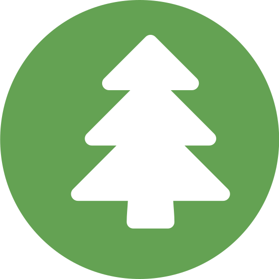

Hospedaje y Áreas Recreativas
Disfruta de la comodidad de nuestras cabañas ecológicas y áreas para acampar, rodeadas de la majestuosidad y tranquilidad del bosque de la Mixteca oaxaqueña.
Más información
PARQUE NATURAL YOSONDUA OFRECE:
Los siguientes servicios::
Disfruta de la comodidad de nuestras cabañas ecológicas y áreas para acampar, rodeadas de la majestuosidad y tranquilidad del bosque de la Mixteca oaxaqueña.
Más información
Recorre nuestros sinuosos senderos y adéntrate en el bosque. Atrévete a cruzar nuestro imponente puente colgante para disfrutar de las mejores vistas de la cascada.
Más información
Vive la adrenalina al máximo con nuestras actividades de altura: lánzate en tirolesa o desciende en rapel a lo largo de los impresionantes acantilados y cañones.
Más informaciónDeléitate con los sabores tradicionales de la región. Disfruta de la auténtica comida oaxaqueña preparada por manos locales.
Más información
Descubre los secretos mejor guardados del parque de la mano de guías comunitarios. Visita la cueva Yau Vehe Kilin y el río Plumas.
Más informaciónDisfruta de momentos en familia en nuestras áreas especialmente acondicionadas con asadores, mesas y sombra natural.
Más información